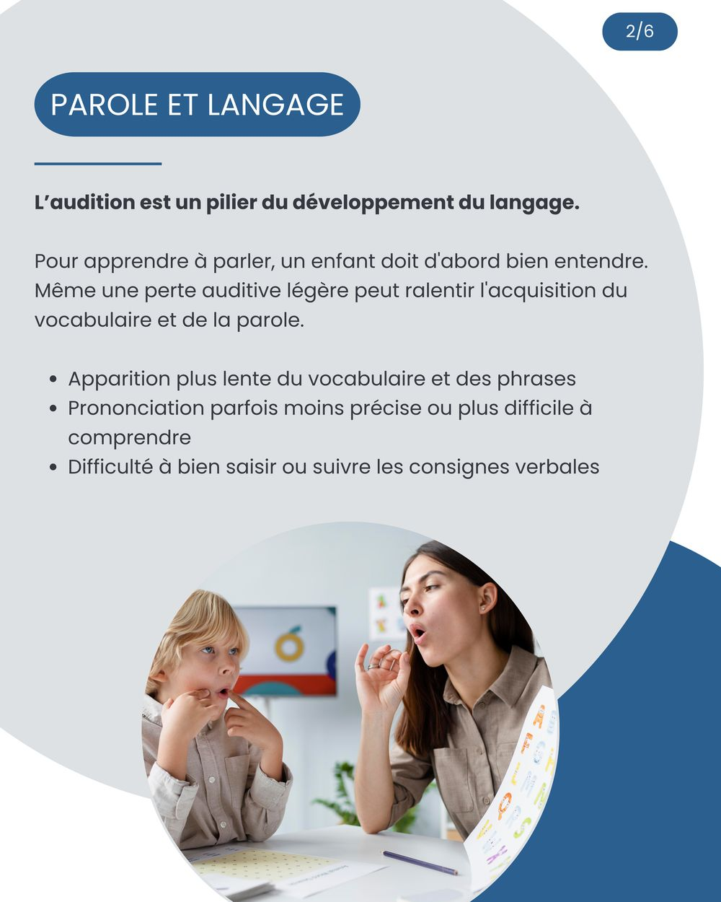
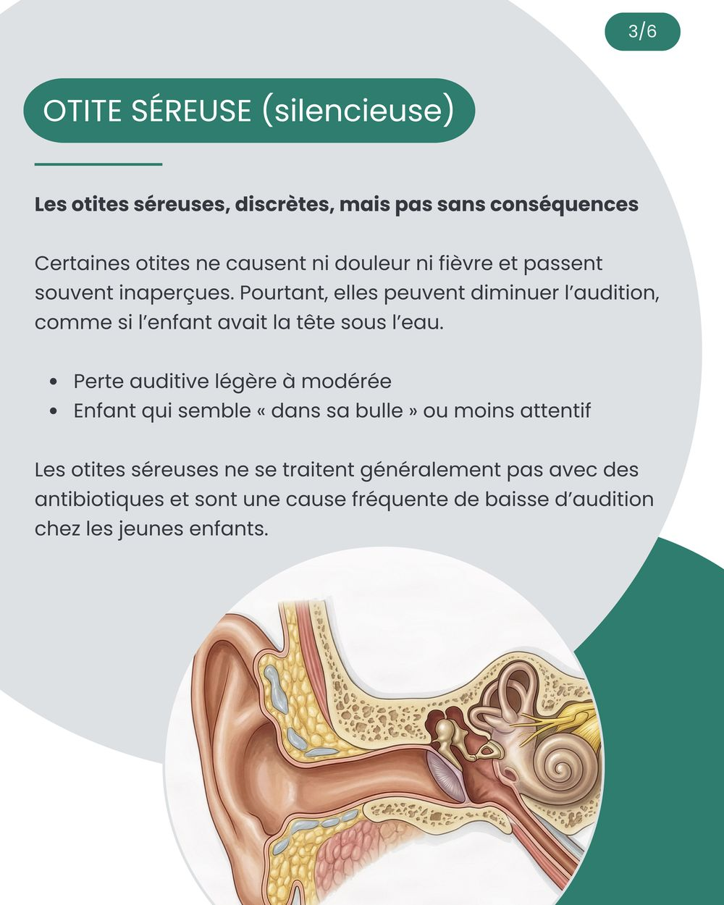
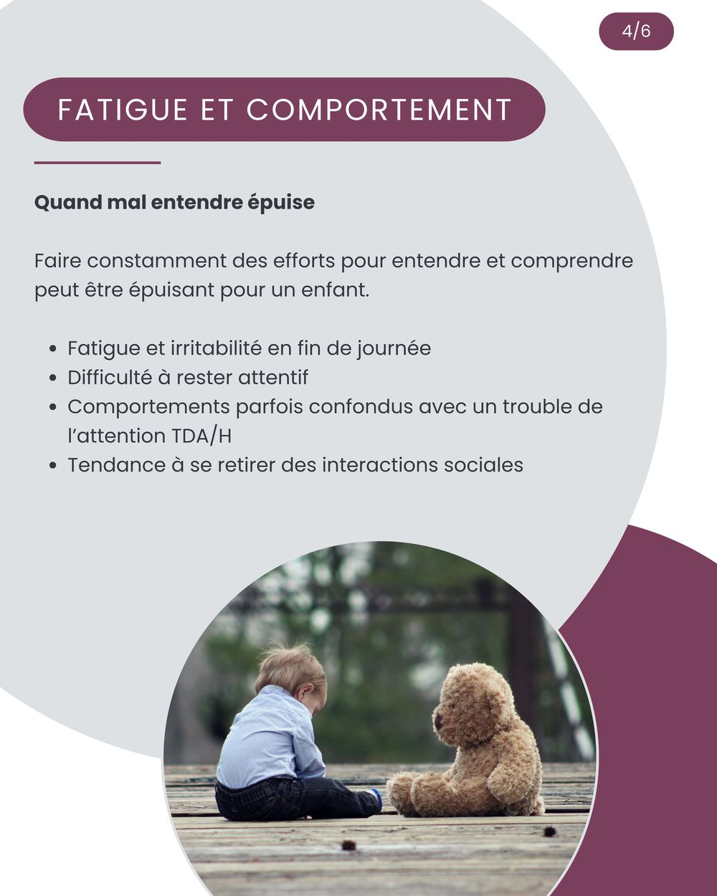
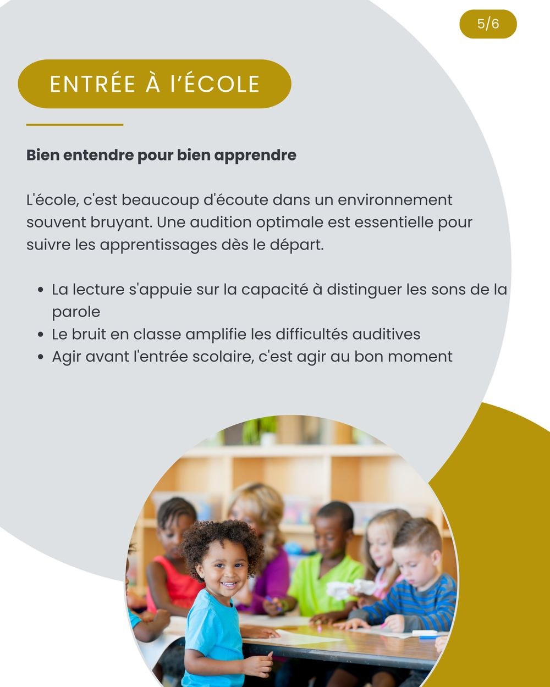
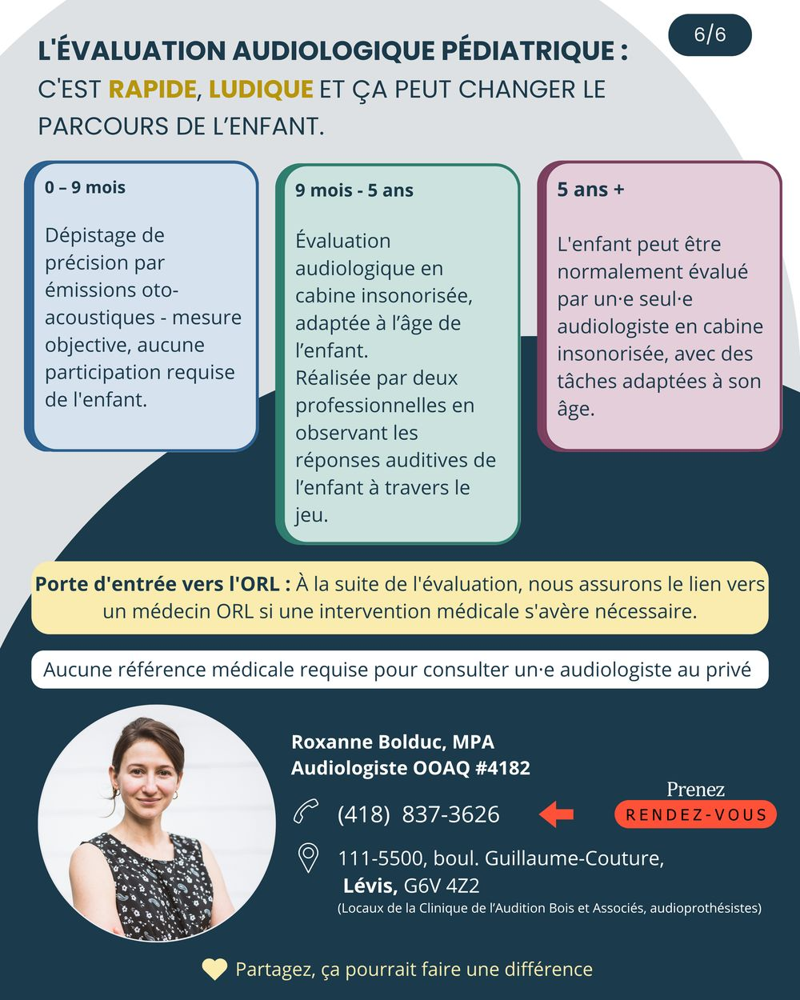

Pour apprendre à parler, un enfant doit d’abord bien entendre. C’est aussi simple, et aussi déterminant, que cela. Pourtant, une baisse d’audition chez l’enfant passe souvent inaperçue : elle ne fait pas mal, ne se voit pas, et l’enfant lui-même ne sait pas que les autres entendent autrement. Voici cinq raisons de faire évaluer l’audition de votre enfant, sans attendre.
Les méthodes selon l’âge
- 0 à 9 mois : mesures par émissions otoacoustiques, une méthode objective qui ne demande aucune participation de l’enfant.
- 9 mois à 5 ans : évaluation en cabine insonorisée, adaptée à l’âge, réalisée par deux professionnelles qui observent les réponses auditives de l’enfant à travers le jeu.
- 5 ans et plus : l’enfant peut normalement être évalué par une seule audiologiste, avec des tâches adaptées à son âge.
À la suite de l’évaluation, je vous dirige vers un médecin ORL si une intervention médicale s’avère nécessaire. Et rappelons-le : aucune référence médicale n’est requise pour consulter un·e audiologiste au privé.
Le guide à télécharger et à partager






Une inquiétude au sujet de l’audition de votre enfant ?
L’évaluation pédiatrique est offerte au point de service de Lévis. Détails du service.
Cet article a une visée informative et ne remplace pas une évaluation personnalisée.
Références
- Joint Committee on Infant Hearing (2019). Year 2019 Position Statement : Principles and Guidelines for Early Hearing Detection and Intervention Programs. Journal of Early Hearing Detection and Intervention, 4(2), 1-44.
- Tomblin, J. B., Harrison, M., Ambrose, S. E., Walker, E. A., Oleson, J. J. et Moeller, M. P. (2015). Language Outcomes in Young Children with Mild to Severe Hearing Loss. Ear and Hearing, 36(Suppl. 1), 76S-91S.
- Rosenfeld, R. M. et coll. (2016). Clinical Practice Guideline : Otitis Media with Effusion (Update). Otolaryngology-Head and Neck Surgery, 154(1S), S1-S41.
- Bess, F. H., Dodd-Murphy, J. et Parker, R. A. (1998). Children with Minimal Sensorineural Hearing Loss : Prevalence, Educational Performance, and Functional Status. Ear and Hearing, 19(5), 339-354.
- Ordre des orthophonistes et audiologistes du Québec (OOAQ). Information au public sur l’audiologie. ooaq.qc.ca